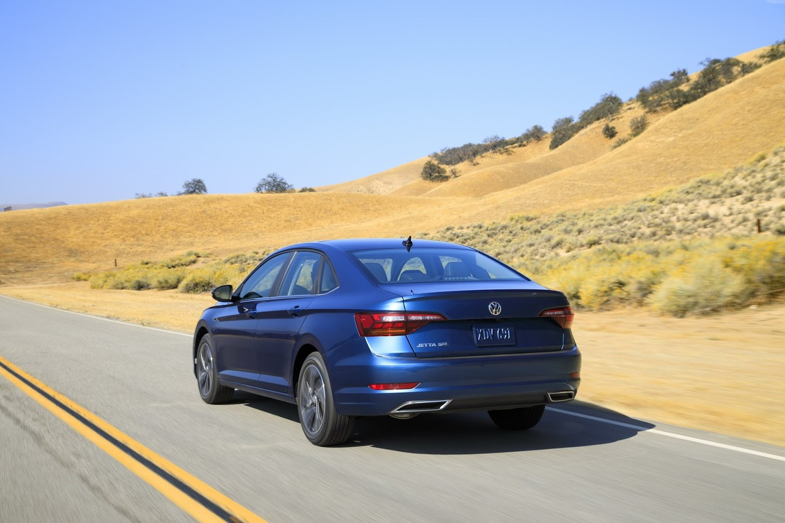

| Autos | Ubica tu consecionaria | Contacto |
|---|
En términos de diseño hay una evolución evidente, aunque nada radical. Mantiene las líneas horizontales características de la marca, pero da un mayor protagonismo a la parrilla. Desde algunos ángulos incluso recuerda al Passat europeo, aunque la trasera ya nos habla de una nueva generación de sedanes de Volkswagen, cuyos trazos se estrenaron con el Virtus.
